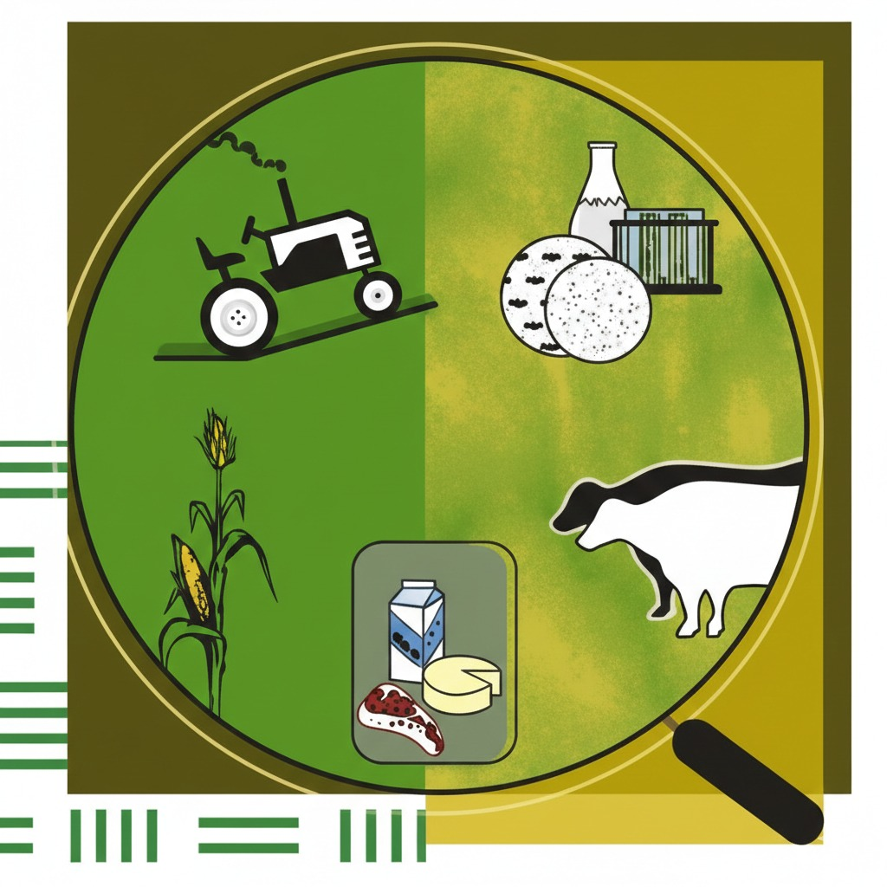
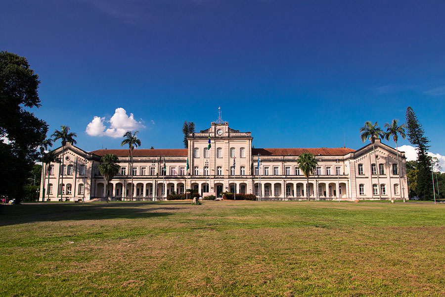

17–18 November 2026
Hotel Beira Rio - Piracicaba-SP, Brazil
The International Symposium on Forage Quality and Conservation (ISFQC) is a consolidated scientific event dedicated to advancing knowledge on forage production, conservation, and utilization within sustainable livestock systems.
ISFQC 2026 will bring together researchers, professionals, students, and industry representatives to discuss recent scientific advances, emerging technologies, and practical applications related to forage quality, silage systems, pasture management, and analytical methods.
Founded in 1901, Esalq — the Luiz de Queiroz College of Agriculture — is part of the University of São Paulo (USP). As a public and tuition-free institution, it has graduated more than 18,000 undergraduate students and awarded over 12,000 master's and doctoral degrees.
Located on the Luiz de Queiroz campus in Piracicaba, São Paulo state, Esalq offers an academic environment that keeps pace with the evolution of higher education. Here, students and researchers embark on a journey that is fully aligned with the demands of contemporary society.
The campus features 4 experimental stations, 140 laboratories, and several research centers available to its 3,000 students. In addition, Esalq provides a comprehensive student support program, including housing, a university restaurant, healthcare services, and financial aid.
A benchmark in various fields of knowledge, Esalq delivers technical, humanistic, diverse, and inclusive education — preparing graduates to contribute to a more sustainable reality from social, economic, and environmental perspectives.
Esalq. One of the most solid and renowned higher education institutions in the country.

Keep track of the key deadlines for the International Symposium on Forage Quality and Conservation.
University of Wisconsin - USA
Biomatrix / Tracking Feed - Brazil
Università Cattolica del Sacro Cuore - Italy
Federal University of Mato Grosso - Brazil
Vila Maria University - Argentina
Federal University of Pelotas - Brazil
Lallemand - USA
China Agricultural University - China
State University of Maringá - Brazil
Federal University of Paraíba - Brazil
University of São Paulo - Brazil
A quick glance at our scientific schedule.
Professor at ESALQ-USP
Postdoctorate at ESALQ-USP
PhD candidate at ESALQ-USP
PhD candidate at ESALQ-USP
M.Sc. student at ESALQ/USP
Undergraduate – ESALQ/USP
Undergraduate – ESALQ/USP
Undergraduate – ESALQ/USP
Undergraduate – ESALQ/USP
Undergraduate – ESALQ/USP
Undergraduate – ESALQ/USP
Undergraduate – ESALQ/USP
Undergraduate – ESALQ/USP
Undergraduate – ESALQ/USP
Choose the category that applies to you to participate in ISFQC 2026.
If you require an official document for your visa application or to secure travel funding from your institution, please download our standard letter of invitation.
⚠️ Note: This is an editable template. You must download the file and fill in your personal details (name, passport number, affiliation) yourself and send to the following e-mails for signature: isfqc2026@gmail.com and nussio@up.br
Each participant may submit up to three (3) abstracts as presenting author, with no limit on participation as co-author. During submission, one author must be designated as the presenting author, who must be registered for the VII ISFQC 2026.
Only original abstracts will be accepted, including scientific research, applied or extension studies, and case studies. Literature reviews will not be considered. All abstracts must be written in English and submitted exclusively through the online system.
The thematic areas covered include forage production and management; silage and haymaking; fermentation processes and additives; forage conservation technologies; forage quality and nutritive value; ruminant nutrition and feeding strategies; sustainable livestock systems; and precision livestock and forage systems.
Submit your abstract and be part of VII ISFQC 2026.
We look forward to your contribution!
Abstracts must be submitted by the online system
Official language ❕ Please acknowledge that the official language of the conference is English. All presentations (oral and poster), and the book of abstracts, will be in English.